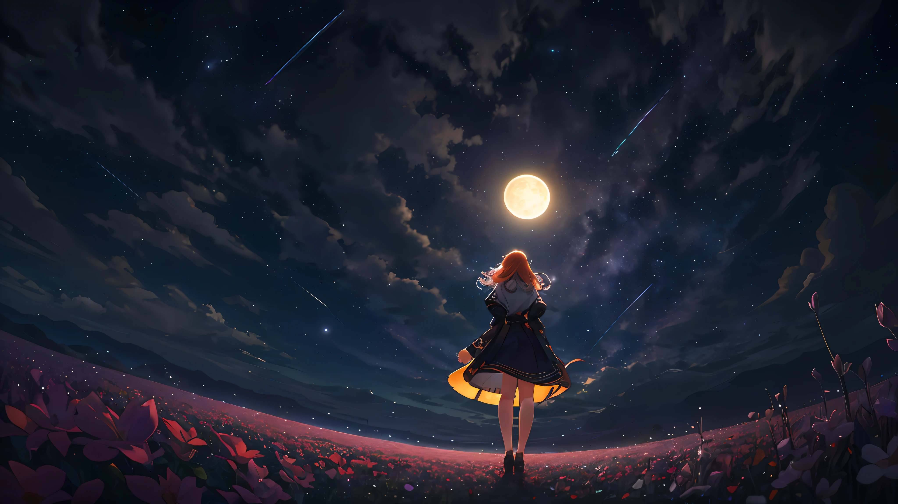

To be the best, you have to know who you are.

I am a freshman at ESSEC Business School. I usually like to read books, browse internship materials, learn new knowledge, and make some small plans for my future graduation. Like most people, I am a little confused about the future. When suddenly a certain episode from a few years ago flashes in my mind, I can't help but think back to myself at that time. Some pictures gradually emerged in my mind, and I desperately wanted to find something in that memory point. In the process of searching, the thoughts in my mind were already indulged in memories. They take me back to the time when I can no longer feel the pounding of my heart, as if I have opened an old drawer, which is filled with the growth, youthfulness, regret and the kind of things that make me laugh suddenly when I think about it. Come out feeling.
Time flies, and life continues to push itself forward, passing through the eyes of passers-by, and the one who looks back from time to time is still the same self who seems to be chasing something unknown.
This is a TV series that I like very much: Ultraman Trigger, and I like the clips in it very much. Whenever I feel sad or can't hold on, this clip always inspires me and makes me full of strength again to keep moving forward.